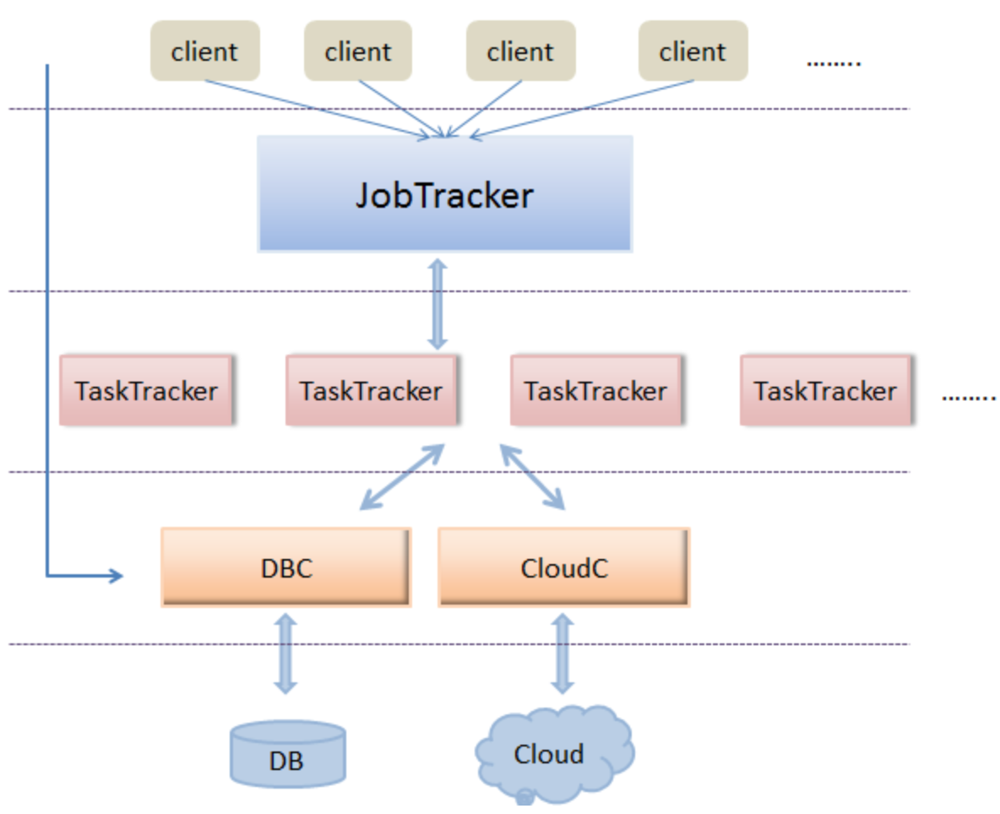
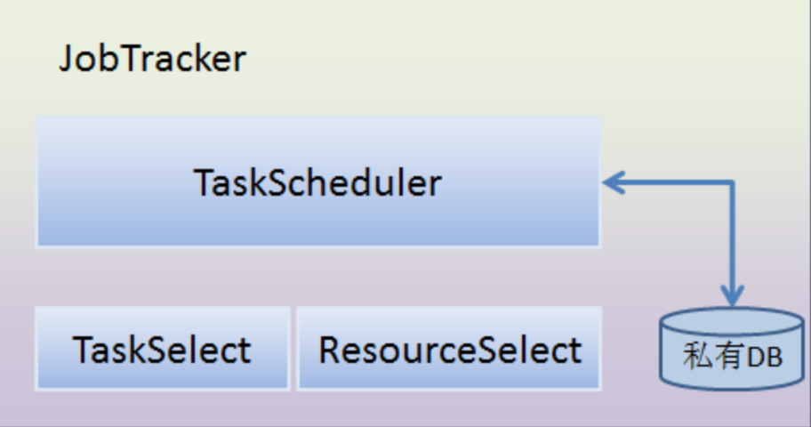
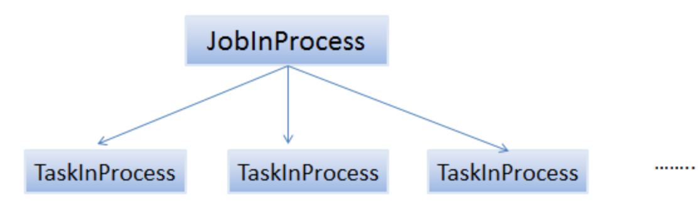
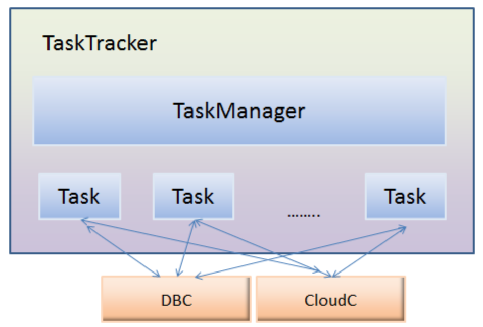

最近工作中接触到分布式服务器，现针对学到的作简要概述, 分布式服务器之路刚起步。
整体框架
下面结合Hadoop的框架思想与工作中接触到的分布式框架，给出简易分布式服务器框架的设计。整体设计框架如下图所示： 
如上图示，可以将整体模块分为5个结构层次，分别为： 客户端层、JobTracker层、TaskTracker层、DBC/CloudC层、以及最后的 DB/Cloud层。
- 客户端层
该层即为客户端的web访问层，通过http访问JobTracker层。 web与JobTracker的具体协议可以协定，或者RPC/HTTP协议都可以。 客户端的主要完成工作请求、暂停、删除作业；获得作业的运行状态信息等。
- JobTracker层
该层是整个分布式服务器的核心层。它是整个集群中唯一的全局“管理者”，涉及的功能包括作业管理、状态监控、任务调度等。 总体而言，JobTracker主要包括两个功能：作业的调度与TaskTracker资源的管理。下节将具体讲解简易集群JobTracker的实现原理。
- TaskTracker层
TaskTracker主要负责任务的执行和任务状态的上报，还有就是分析后结果的入库等等。
- DBC/CloudC层
DBC为数据库控制模块，CloudC为云存储控制模块。这里通过这两个模块与下面的数据库、云存储交互。控制模块中可以通过缓存机制，连接池机制等减轻直接访问DB/Cloud的压力。
- DB/Cloud层
DB/Cloud分别为数据库、云存储（可以部署在一台服务器或不同的服务器上） 。为啥要分数据库和云存储呢？ 对于结构化的信息，存储在数据库中比较方便，能够插入、更新、修改（这里的数据库设计的是关系型数据库，而非HBase那种面向列的存储数据库）。云存储则存储的是大的文件信息，这样TaskTracker通过调用CloudC的API，获得资源所在云存储的URL，TaskTracker能够根据URL直接访问云存储。
JobTracker实现细节
JobTracker是整个系统的核心租价，是系统高效运转的关键。其实现框架如下图： 
这里，将JobTracker的内部框架分为四个模块，分别是 TaskScheduler（任务调度模块），TaskSelect（任务选择模块），ResourceSelect（资源选择模块，选择哪个TaskTracker执行任务）。私有DB模块（存放任务的数据库）。
- TaskScheduler模块 该模块负责Job与Task之间的关系维护，负责Job与task的进度管理及更新等工作。这里可以仿照hadoop采用“二层多叉树”方式描述和跟踪每个作业的运行状态（Hadoop采用的“三层多叉树”，多了一层任务运行尝试）。 
其中，JobTracker为每个作业创建一个JobInProcess对象以跟踪和监控其运行状态。该对象存在于作业的整个运行过程中。同时，采用分而治之的策略，JobInProcess将每个作业拆分成若干个任务，并为每个任务创建一个TaskInProcess对象以跟踪和监控其运行状态。
该模块还负责task与resource对应关系的管理。即哪个task放到了哪个tasktracker节点执行的。这就涉及到了与TaskSelect、ResourceSelect模块的交互。
从图中可以看到，有私有数据库，这里的目的是将作业的信息、作业运行的当前状态等信息入库，JobTracker单点故障，重启后能够从数据库中读取保存的信息，重新运行任务。Hadoop中采用的日志方式进行任务的恢复，关于adoop的日志恢复，有待研究。这里姑且用任务数据库仿照Hadoop的日志恢复。
- TaskSelect模块
该模块负责任务切片的选择。 因为客户端的 job是带有优先级的，有些job需要先执行，有些可以延后。 所以这里job切分的task切片都需要存放到TaskSelect模块的队列中，然后该模块选择优先级较高的task返回给TaskScheduler，表示当前可以执行该任务了。
该模块中的优先级可以通过client端用户设定，而且优先级会根据时间长短动态调整。
- ResourceSelect模块
该模块负责资源的选择。TaskTracker会定时发送心跳包给JobTracker，而发送的心跳包中包括资源使用情况（该节点的cpu利用率，内存利用率等信息你）以及任务运行状态。这些信息都将被保存在ResourceSelect这个模块。
为每个TaskTracker节点创建一个对象（TaskTrackerObj），然后通过心跳来更新TaskTrackerObj中的状态信息。
TaskTracker实现细节
TaskTracker是任务的执行者，主要负责任务的执行和任务状态的上报。该模块的框架图如下所示： 
该模块中也有个管理模块TaskManager。该模块的作用相当于任务执行者的管理者。它有权限控制下面的Task（可以拉起、暂停、杀死下面任意一个Task）。它还会收集自身的资源，各个任务的状态等信息上报给JobTracker。 也就是说它是与JobTracker直接交互的。
这里，Task运行后的结果统一经过DBC保存到了DB中， 而Task需要的资源可以通过CloudC，获得资源的URL，然后直接下载到本地或者内存 。
存在问题
与真正的Hadoop设计思想相比较，会发现笔者这里的简易集群确实简单，只是涉及了MapReduce的 master/slave架构，而对另外两个hadoop的精髓——HDFS、HBase则未涉及。只是实现简单的分布式计算，未实现分布式的存储。
该设计也存在单点故障问题， 比如JobTracker的， DBC的，CloudC的单点故障等等。